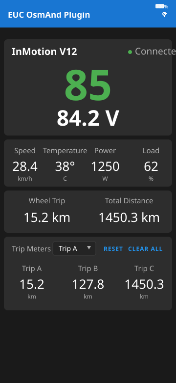

OsmAnd map widgets
Battery & voltage, battery %, voltage, and Trip A/B/C widgets on the OsmAnd map's left or right panels, updating live while you ride. Widget setup →
EUC OsmAnd Plugin reads live Electric Unicycle data from the EUC World app and puts it where you want it: OsmAnd map widgets on the ride map, a glance-safe read-only display on the Motoeye E6 helmet HUD (or any Android Auto screen in the car), a home screen widget, and a HUD-style phone app. Three independent trip meters keep daily, periodic and lifetime distances apart.


Battery & voltage, battery %, voltage, and Trip A/B/C widgets on the OsmAnd map's left or right panels, updating live while you ride. Widget setup →
A rider-optimised, read-only pane on the Motoeye E6 helmet HUD — or any Android Auto head unit in the car: battery, voltage, speed, temperature, power and load. The Auto integration →
A compact widget with battery %, voltage and speed, updated in real time while the background service runs.
Large, readable battery and voltage display with real-time speed, temperature, power and load, plus wheel model identification and connection status.
Independent A/B/C meters anchored to the wheel's odometer — daily commutes, periodic totals, service intervals. Reset individually or all at once.
No account, no analytics, no ads. Data flows only from EUC World's internal webservice to the app on your phone.
The interfaces below are currently shown as interface mockups — real screenshots will replace them shortly.

All it needs is a wheel connected to EUC World.
Open source, open process: the full source is on GitHub and signed APK releases are published automatically for every release tag.